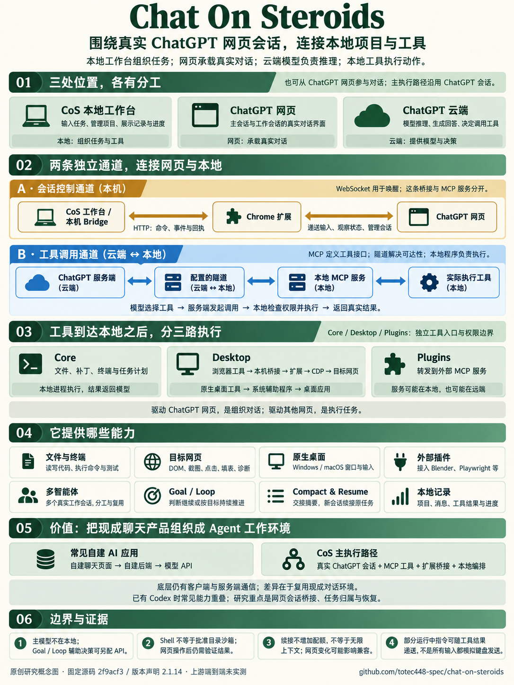

CoS 工作台
你可以在这里输入任务、管理项目、查看历史和工具结果。它是围绕网页会话组织的工作视图。
CoS 在本地组织任务，ChatGPT 网页承载真实对话，云端模型负责推理。
MCP、隧道与扩展把这段对话连接到本地项目，形成可执行、分工和续接的工作过程。
把网页版 ChatGPT 与真实本地环境关联起来，并围绕它构建 Agent 能力。让真实对话能够操作项目、执行工具、组织分工和持续推进任务。
你可以在这里输入任务、管理项目、查看历史和工具结果。它是围绕网页会话组织的工作视图。
这里承载真实的主会话和工作会话；你也可以从网页参与。网页不是本地运行的模型。
云端模型理解问题、生成回答并决定调用工具。主执行流程沿用 ChatGPT 会话。
扩展通过本机 HTTP 交换命令、事件与回执；WebSocket 用于唤醒。它配合递送消息、观察会话、开新聊天和唤醒工作会话。这是独立于 MCP 的本机桥接服务。
模型选择工具，ChatGPT 服务端发起 MCP 调用。隧道让远端服务可达本机；CoS 检查权限后执行文件、命令或其他工具，把真实结果返回模型。不是 ChatGPT 页面直接访问你的 localhost。
浏览器任务先走 MCP 到达 CoS，再由扩展通过 Chrome 调试接口执行并回传结果。原生桌面走系统辅助程序；外部插件走相应 MCP 服务，后者可能在本地或远端。
主输入通常经网页递送；部分运行中纠正和收尾指令可随工具响应送达，不能把所有消息都理解为模拟键盘输入。Goal / Loop 的辅助决策也可另配 API。阅读详细链路 ↗
读文件、改代码、跑测试、操作网页。真实结果回到模型，决定下一步。
工作会话分工、消息回传、任务推进与交接。多 Agent 是其中一部分。
已有 Codex 时，常见能力重叠。更值得研究的是桥接、归属与恢复机制。
本页为原创概念展示，依据固定提交 2f9acf3；没有运行上游应用或连接你的 ChatGPT。
一张图汇总角色分工、两条通信通道、工具执行、八项能力与使用价值。
这是依据固定源码制作的概念图，非上游产品截图或实测拓扑。

图由 ImageGen 生成并人工核对。浏览器内部实现与账号可用性可能变化；本次仅核对固定源码和研究展厅。查看本次内容审查 ↗ · 完整文字分析 ↗
选择一项能力，看清实现方式、使用场景与前提。八项能力均为源码分析，未做上游端到端实测。
同一个需求：“修复本地网站的登录问题，并在浏览器里验证。”
“已经点击”只说明操作被尝试。模型还需要重新观察页面、查看请求与测试结果，才能判断任务是否完成。真实运行必须保留实际证据。
它的特色是围绕真实 ChatGPT 网页会话，用 MCP 接入执行能力，用扩展和本地程序组织会话。
底层仍然有客户端与服务端通信；差异在于谁承载对话、谁组织模型与工具。
自己维护对话界面，由自己的后端组织模型调用与工具执行。
复用已有对话环境，向外连接本地项目与工具；Goal / Loop 辅助后端可另配 API。
复用现成网页会话，通过 MCP、隧道、扩展与本地工作台接入执行、分工和续接。已有 Codex 时常见能力重叠；我们重点研究的是这套连接与组织模式。
| 比较维度 | Codex | Chat On Steroids |
|---|---|---|
| 产品入口 | 官方 Agent 客户端与运行环境 | 第三方 ChatGPT 本地工作台 |
| 文件 / 终端 / MCP | 已有同类能力 | 自建本地 MCP 服务供会话调用 |
| 多智能体 | 官方子智能体机制 | 多个 ChatGPT 会话与自行管理的消息 |
| 网页控制 | 取决于宿主与已配置工具 | 随仓库提供扩展浏览器工具 |
| 长任务 | 客户端自身会话与任务机制 | Goal / Loop、交接摘要与新会话绑定 |
| 主要研究点 | 直接用于项目工作 | 桥接、任务归属、持久化与恢复 |
现有 Codex 已能承担。仅为这些能力新增工作台，收益不明确。
CoS 提供会话、隧道、工具与桌面界面的整套连接方式。
重点学习消息回执、会话身份、休眠复用和续接失败的处理。
对比基于 2026-09-18 官方文档与固定源码，不包含性能、成本、可靠性或模型效果的实测排名。Codex 官方说明 ↗ · 官方子智能体说明 ↗ · 完整选型说明 ↗
上游版本声明 2.1.14 · 固定提交 2f9acf3 · 主仓库 MIT。
这里验证的是源码依据与原创展厅，不是上游整套产品的真实运行。
25 个源码与说明文件，保留链接、字节数与 SHA-256；增加本机桥接和输入递送依据。
查看来源记录 ↗交互分支、总览图缩放、路由、资源与响应式，以及五项目共同构建。
查看浏览器记录 ↗未安装 CoS、连接账号 / 隧道，也未验证真实桌面与多 Agent。
查看后续实测方案 ↗README 写 Chrome 116+，该提交的扩展实际要求 Chrome 125。工具参考文档也未完整覆盖当前浏览器声明。本研究以固定代码为准，不把较早说明当作完整能力清单。